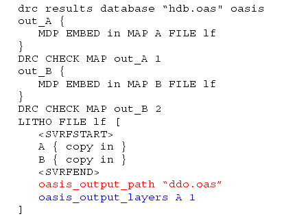

Output to HDB
Direct Database Output (DDO)
Dual HDB and DDO
The default method is to output to the HDB, as shown in the following example:
drc results database “hdb.oas" oasis
out_A {
MDP EMBED in MAP A FILE lf
}
DRC CHECK MAP out_A 1
out_B {
MDP EMBED in MAP B FILE lf
}
DRC CHECK MAP out_B 2
LITHO FILE lf [
<SVRFSTART>
A { copy in }
B { copy in }
<SVRFEND>
]
In this example, both layers A and B are output to the hierarchical database file named “hdb.oas.”
The second method is to use the oasis_output_path and oasis_output_layers keywords to divert the output from the HDB to an OASIS file. The oasis_output_path keyword is used for directing the output geometry, and the oasis_output_layers keyword is used to output the layer and data type numbers for SVRF layers written to the OASIS file. This is shown in the following example:
drc results database “hdb.oas" oasis
out_A {
MDP EMBED in MAP A FILE lf
}
DRC CHECK MAP out_A 1
out_B {
MDP EMBED in MAP B FILE lf
}
DRC CHECK MAP out_B 2
LITHO FILE lf [
<SVRFSTART>
A { copy in }
B { copy in }
<SVRFEND>
oasis_output_path “ddo.oas”
oasis_output_layers A 1 B 2
]
As illustrated with the bolded text, the output is diverted to an OASIS file named ddo.oas, where layer A is mapped to layer 1 in the OASIS file, and layer B is mapped to layer 2.
The third method allows you to perform a dual HDB and direct-to-OASIS output, still using the oasis_output_path and oasis_output_layers keywords. This is illustrated in the following example:

In this example, layer A is mapped to layer 1 in the ddo.oas file (blue text). Layer B remains unmapped, and it will instead be output to HDB (the hdb.oas file) as layer 2 by default (shown in the red text).
In this dual mode, layers can only be output to either DDO or HDB (for example, output A cannot be directed to both DDO and HDB).
Currently for DDO, if a layer is unmapped then it will be flagged. For example, no map-matched output name B in oasis_output_layers. For DDO & HDB, if a layer is unmapped, it is output to HDB by default.